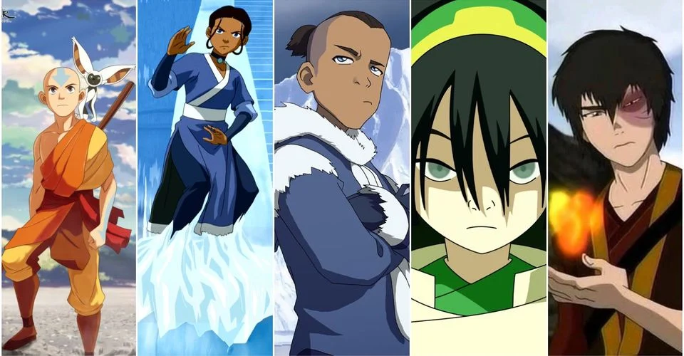

About The Story:
Avatar is ultimately a story about the experience of reincarnation, and the journey of a boy named aang who inherits a battle to save the world.
^ Team Avatar ^
Aang's Characteristics
- He's got an arrow tattoo
- He's master of the 4 elements
- He's trying to be the bridge between the spirit world and the human world.
About Team Avatar
Team Avatar, in order of tenure, are; Katara, Sokka, Toph, and Zuko. Click on the links below to read more about them.